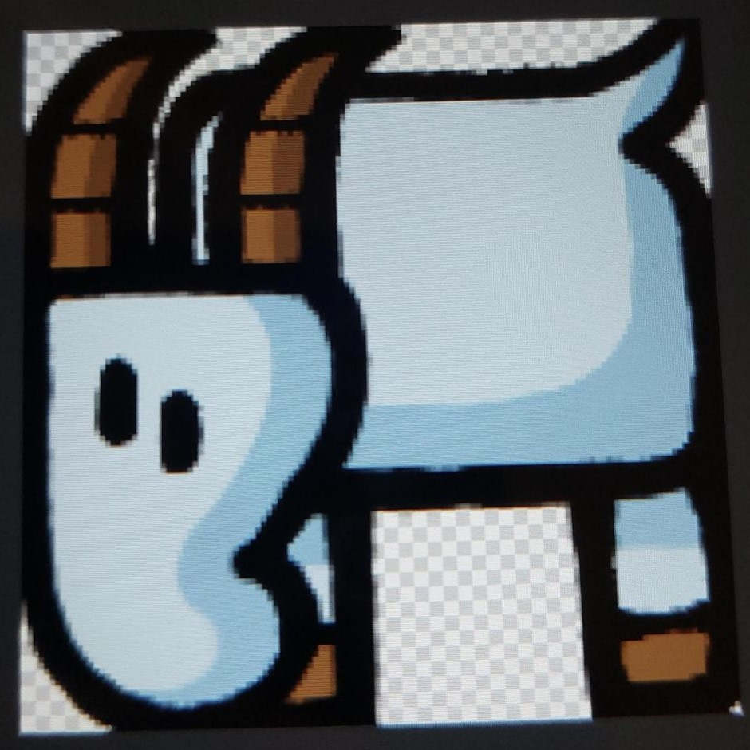

Entstehung der Erde
Vor langer, langer Zeit, lange bevor diese Erde existierte, existierte der Rat der sieben weisen Vögel. Es ist überliefert, dass dieser neben dem heiligen Eagel auch noch aus der Destruente, dem Huhn und dem Pinguin bestanden, die Namen der übrigen 3 Vögel sind verschollen. Dem Rat der 7 weisen Vögel war langweilig, da sie nichts anderes zu tun hatten, als in einem riesigen leeren Raum herumzuschweben. Eines Tages fiel dem Eagel aber etwas auf: wenn man mit seinen großen Flügeln mit bestimmten Bewegungen Raumzeit verdichtete, entstanden plötzlich kleine Materialbrocken. Da er nichts anderes zu tun hatte, forschte er weiter, merkte bald, dass sich diese Brocken anzogen und konnte so eine Scheibe formen. Nach einigen Tagen kondensierte auf dieser Scheibe Wasser und Meere bildeten sich. Am Ende blies der Eagel noch eine riesige Seifenblase, die wir Himmel nennen (und dessen Funkeln wir Sonne, Mond und Sterne nennen) und die Erde rotierte (deswegen Tag/Nacht) endlich fertig im All herum. Allerdings war es noch sehr langweilig und leer. Das konnte der Eagel ändern, indem er heimlich einem anderen Vogel (es ist nicht überliefert, welcher) eine Feder klaute und aus den kleinen Haaren Pflanzen, Menschen und Tiere schuf. Ökosysteme und Zivilisationen bildeten sich, und der Eagel hatte endlich etwas zum Zuschauen, anders als andere Vögel, die immer noch Tag ein, Tag aus in der Leere herumschwebten.
Streit und Verbannung des Eagels
Nach und nach fiel den anderen Vögeln aber auf, dass der Eagel etwas im Schilde führte. Er flog, anders als die anderen Vögel, morgens immer in die gleiche Richtung davon und schien sich gar nicht so sehr zu langweilen. Eines Tages folgten sie ihm heimlich, und sahen die Erde. Aus Neid fassten sie einen Plan: als der Eagel nachts, wie sonst auch immer, zum Schlafen zurückkehrte, griffen sie ihn hinterrücks an und trennten sie ihm mit dem Messer der Destruente die Flügel ab. So konnte er sich nicht mehr bewegen und war an einen Ort gebunden. Dank der magischen Anziehungskraft zwischen Objekten (manche Menschen nennen diese auch Gravitation) fiel er schließlich langsam, aber sicher auf die Erde, die er selbst geschaffen hatte (und löschte nebenbei noch die Dinosaurier aus).
Leben auf der Erde
Nach Jahren des Wanderns traf er auf eine kleine Siedlung und fand in einem großen Saal namens "Theaterlager" Unterschlupf. Essen bekam er, indem er es aus den Süßigkeitenschubladen der Bewohner den Inhalt stahl und merkte, dass er so die Menschen sehr gut gegeneinander aufbringen konnte. Aber auch das wurde mit der Zeit langweilig, und er lebte zwar mehr oder weniger komfortabel im Theaterlager, aber hatte wieder nichts zu tun und konnte sich, da er keine Flügel mehr hatte, auch nicht die Zeit damit vertreiben, Raumzeit zu materialisieren. Einige Jahre später wurde der Eagel plötzlich unerwartet aus seinem Schlaf gerissen und in ein Zimmer gebracht, in dem einige Menschen zuerst seltsam um ihn herumhampelten, aber ihn dann freundlich aufnahmen und ihm, wie es ihm gebührt, zu huldigten. Aus irgendwelchen Gründen wurde allerdings angenommen, er gehöre in das Theaterlager, wurde dorthin gebracht, und, bevor ihm die Klasse zu Hilfe eilen konnte, in einen kleinen Container eingesperrt. Die Menschen überbrücken diese harte Zeit ohne den heiligen Eagel mit einer Statue, konnten ihn aber schlussendlich wieder zurückholen.